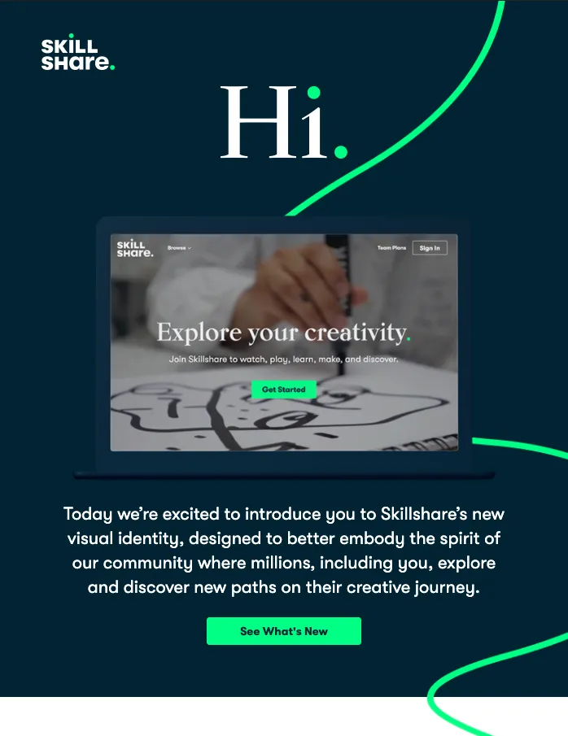
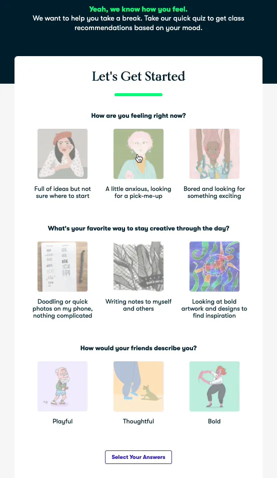
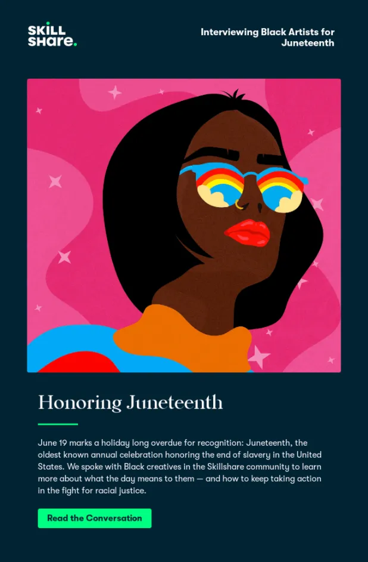
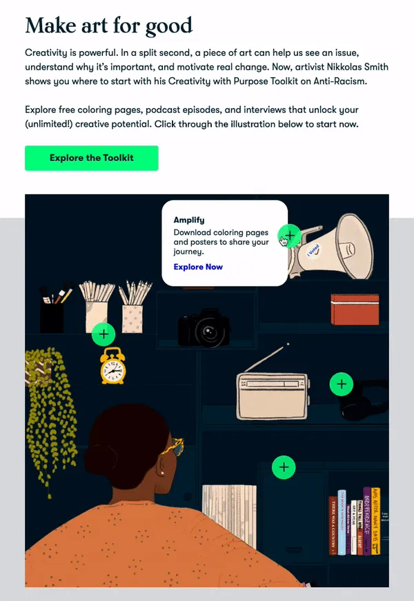

Skillshare offers thousands of inspiring classes for creative and curious people. Topics include design, creative entrepreneurship, email marketing, web development, and more. In other words, an audience that is smart, savvy, and has lots of creative juices running through their bodies – which makes nailing the email experience even more stressful because of how easily the service can be judged from the inbox.
So when we saw a brand new redesign and strategy come out of Skillshare (we've been tracking them for a while), we dug deeper with their Jeremy (JPC) and Mary (MB) from their team to figure out what caused the change and what they are learning. Here's a recap of that conversation.

The Skillshare emails stand out due to the vibrant colors, background images, and live text. How would you describe Skillshare’s design language?
JPC: The Skillshare visual concept leans into the idea of the creative journey. Very specifically, about the journey itself and not worrying about an endpoint. By emphasizing lines, we explore the use of meandering paths and bold colors to create a graphic and eloquent personality to what Skillshare is about – finding yourself. We’re a digital-first company, so we’ve really leveraged the vibrancy of color in RGB to generate excitement and to help grab focus in a world where every brand is vying for attention.
Recently Skillshare had a rebrand. How did that impact your email template design and sending cadence?
JPC: The rebrand was really the impetus for new email templates. We began by simply “reskinning” the “old” email suite to have them match the new visual identity. After the first set launched in January, we began more extensive re-designing of emails, using tests and experiments to validate some of our design choices and email formats. We had some grander ideas during the concept phase, but, as is typical, we’re hitting some roadblocks in development and consistency across all email clients. Really keeping an eye on accessibility across platforms.

What is the hardest part of designing for an online education company? How do you think that it differs from other industries?
JPC: First and foremost, we want to make sure the content and comms are accessible to everyone. Education shouldn’t have blockers, and we really try to design with enough flexibility that the site and emails work for everyone. The next challenge is also related to our audience in the sense that there are a lot of creative professionals – designers, writers, marketers – who use Skillshare. We do our best to create objectively well-designed things, because it’s important that we “walk-the-walk” in order to build trust in the audience. If our design is bad, why would you want to learn design from our teachers?
What has been your best email, and what specifically made it the best?
JPC: We were really proud of the design for our web relaunch in the new year. It was one of the first newly-skinned emails to go out, and the fact that, for many, it was the first impression of the new brand, we wanted to make sure it looked great. It took some dev trickery to have the journey path work top to bottom and across all clients, but it was great to make it happen in the short timeframe. We also reimagined our perks email, imbuing it with new copy and a new design. Really happy how it turned out - the mobile and desktop views are both great.
Objectively, the emails that have performed best have been more interactive. From our downloadable wallpaper email to a recently launched quiz experiment, we’ve found really high engagement when our audience is invited to participate.

What’s one thing you thought you knew about email at the beginning that you now understand differently? Anything you would change in your emails now that you can look back on it?
JPC: I’m the first to admit that I know nothing besides that it’s really hard to design for email. A lot of companies use workarounds like text-in-image to get a good looking email, but we really want to make sure our comms are accessible to screen readers and dynamic across mobile and email clients. We err on the side of clarity and editorial sensibility over design trickery. It keeps us honest, our design simple, and our work available to everyone.
What tools do you use when designing / building emails? What could you not live without?
JPC: Figma has been a game-changer. Collaborating with designers and developers remotely within a shared design system has made the entire process faster and more fun. Most of my independent contract work has been around design & innovation sprints, and Figma fosters that sprint mentality - work quickly, iterate constantly, and no one person owns a design.
MB: We also added in Email on Acid last year to help us QA emails across devices and providers. It’s taken out a lot of guesswork with email design, and we can be confident now that every user is going to receive a stunning email (even if they are using 2007 Outlook).
What new tool do you wish existed for email?
JPC: No “tool” specifically. Personally, I wish email wasn’t so fragmented. We have, generally, strong standards and coding languages in place for the web and mobile. Email is very much stuck in the past and due to the competitive landscape, I don’t see it catching up any time soon. As various OS have evolved, email has just gotten trickier. Dark mode has been a particular pain point.
Some Questions About Skillshare Strategy:
What kind of tests are you currently running? Any results that you can share? Any small changes that you have tested in your emails that made a significant impact in retention, click-through, or service to Skillshare paid customers?
MB: Explore interactive + AMP for Email - Interactive elements and AMP for Email provide a lot of opportunities for us to create moments of creativity and discovery directly in the email, without ever having to go to the site, so from a brand perspective, these can be really powerful. We’ve tested interactive quiz emails and seen promising results, and we’re in the process of scoping out additional interactive campaigns for the 2nd half of the year.
In a COVID-world, we are trying to retest a lot of baselines given the world looks so different right now, and that’s impacting who is coming into the funnel. EX: timing of triggered emails to bring users back to saved classes, subject line language, and onboarding content.
One of those things is class recommendations - testing both algorithms feeding them and how we frame them for users. For example, we’ve sent an email with personalized class recommendations several times a month for the last two years. Late in 2019, we did testing on changing the formatting for the classes without touching the algorithm. By packaging classes in digestible pairs, instead of just listing 6 to 8 classes, we improved CTOR by 16% and class engagement by 19%. We didn’t need to touch the algorithm at all, so it was a very simple test that had a significant impact for us.
Do you think email is a good tool to build community?
JPC: Absolutely. If we provide quality “stuff” (comms, tools, insights, etc.), it gives us consistent and direct access to our audience. By our community opting-in, we’ve received an invitation to create valuable dialogue. We view that responsibility with weight, and we work hard to make every email feel useful - whether that's letting them know about a class they may like, communicating our support for social justice, and reminding them that they will be charged for their membership. We use email to live our values – of transparency, community, and curiosity – and that builds not only a large community but a diverse and engaged one.

How are you balancing a strong design aesthetic and the need for these emails to perform well and aid in growth and service to existing paid customers? What would you say is the most important email KPI to your organization?
JPC: As mentioned above, we strive for performance-first. That's what separates design from fine art - we're here to communicate, make good choices clear, and move the business forward. It just so happens that better-looking emails happen to perform better. The most important KPIs are probably similar to many companies - Acquisition, Retention, and Engagement. We happen to believe a strong brand sentiment helps with all of those, and that sentiment is cultivated through great customer experiences.
What kind of triggered campaigns are you running at Skillshare?
MB: General philosophy on these emails is asking how we can get Members to more deeply engage with classes and their creativity. We don’t generally use it to celebrate milestones such as birthdays or anything like that. But here are some that work well:
- Member onboarding - 5 send series focused on educating the user on the various offerings included with their Membership and how a creative practice can fit into their life.
- Saved class - If user saved a class but hasn't engaged with it, we send a reminder email to bring them back to the class.
- Class completed - Watch class, prompted to do project.
- New user/abandoned membership onboarding - 4 send series. These are folks who created an account without starting a free trial, so in a lot of ways they are an abandoned cart customer. Unlike the Member onboarding, this is much more focused on value.
Do you treat transactional and promotional emails differently?
JPC: We do. We’ve been slowly migrating our product emails (mostly transactional) into Blueshift to better align with our general email process from a template, experiment, design and copy perspective. However, we want to be as transparent as possible when it comes to transnational emails, so we tend to use simplified, clear templates in direct support of the messaging. We also do our best to remove “noise” from those comms, like additional class recommendations, unless they directly support a value prop.
How do you choose between using a designed template (colors and images) vs. a plain text letter style template (styled text)?
JPC: This relates to the transactional question above - really, we look at the goals and the types of communication and try to be as direct as possible when applicable. Not every type of communication should be wrapped in surprise and delight. Transactional emails, comms on COVID and Social Justice are just some that we’ve chosen directness for.
What's an unsuccessful campaign that you ran? What did you learn?
MB: When we launched the rebrand earlier this year, we tested different types of playful emails to inspire Members. One of these was timed with Love Your Pet Day in February, and we showcased Member projects inspired by pets, with the hope that is would 1) get Members with pets into their next class and 2) be a moment for delight for users without pets (who doesn’t love some pugs and kittens?).
The answer is apparently our list! It did not perform well on any of our KPIs. It was very clear we pushed too far on “surprise and delight” and did not clearly provide a learning path for our Members. It was a disappointment, but we look back on that email when we’re formulating new campaigns now and use it to interrogate the strategy and if it’s helpful for Members.
Some Questions About Skillshare Culture:
What's the dynamic of your team? Is there a lot of idea sharing and creation, or is it pretty linear? How do you think this affects Skillshare's emails?
JPC: We’re fortunate that Skillshare is still a relatively small company, which means there feels like a lot of room for collaboration. We’ve got a smart, humble group of people doing work that we believe in. Sometimes it can be linear but, more frequently, we’ve had an agile workflow throughout the marketing, product and brand teams.
If you were going to hire an employee to work on your emails, what traits would you look for?
MB: These three things:
- Curiosity - There’s always something to test or a new way to approach a foundational campaign.
- Empathy - Being creative and sharing that with others is a vulnerable thing. Keeping that mind in our emails so we can be focused on getting people comfortable and believing in themselves is extremely important.
- Diplomatic - Email is a collaborative channel, and there’s always going to be a tension between various goals and resources. Being able to navigate that is critical.
Lightning Round For Kicks & Giggles:
What is one piece of advice that you could give about building a brand through communication?
JPC: Be consistent, transparent, accessible: Your audience wants to know what to expect, and they want to be able to trust you. It’s hard to build those other two if people can’t access the information.

What other emails inspire you? Which company that you subscribe to does email the best?
MB: Headspace - I love the design of the emails, and they do a great job of explaining the value of meditation and nudging users to keep up with it.
Grammarly - I love the stats and performance emails, as we think of incorporating that into emails, they are a source of inspiration.
Babbel - Just signed up for this to learn Spanish, and I found the onboarding helpful and encouraging.
I love Harry’s emails — The copy is fun, informative, and clear. The design is unique and consistent. Engaging overall.
JPC: Nike, Apple, Aesop, Uber. They all look good across platforms - though, sometimes really too heavily on images-as-text. They all also need a wide variety of emails - marketing, transactions, shipping notifications, etc.
What was the most recent spam message you got in your spam box? What was the subject line?
MB: Before Skillshare, I did email fundraising for political campaigns, so I still get a ton of political email. The most recent was from “CNN JUST REPORTED” with the subject line “Amy McGrath DOMINATING Mitch McConnell.” Political emails are a completely different league than our emails, but ultimately we’re both tasked with figuring out how to get readers to believe in rather intangible concepts like growth, change, and progress. We won’t incorporate all-caps into our emails anytime soon, but they give me food for thought.
JPC: Lots of political emails these days. Interestingly enough - I got an event added to my calendar (via google) with a spam link in it. Which I thought was pretty savvy/sketchy (don’t worry, I didn’t click it).
What is your favorite book?
MB: "The Amazing Adventures" of Kavalier and "Clay" by Michael Chabon.
JPC: That’s like asking my favorite song! I tend to go back to Hemingway & Murikami most frequently.
Caffeinated beverage of choice: Coffee, Tea, Soda?
JPC: Coffee forever.